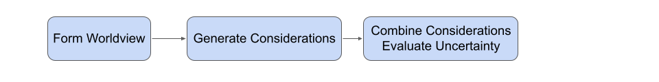
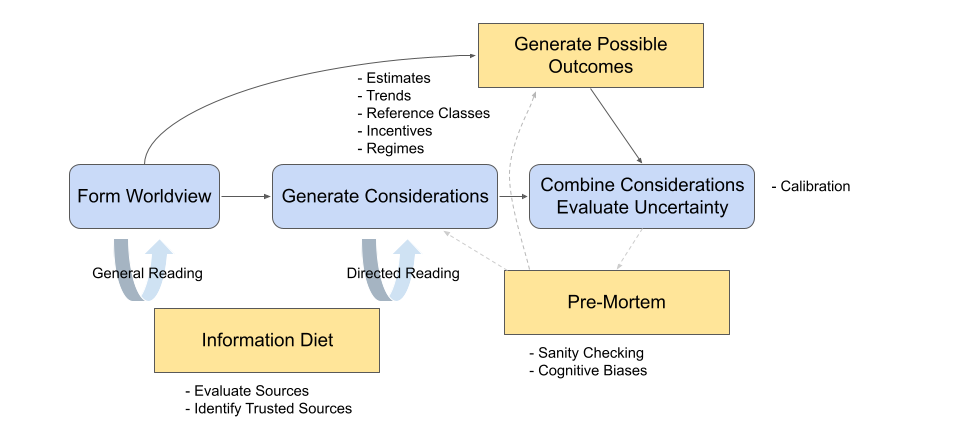

Course Overview
Jacob Steinhardt
In this course we'll be teaching you the skills needed to be a successful forecaster. To help preview the course, here we'll outline what those skills are.
When you first hear the word “forecasting”, you might first think of fancy statistical time series models, or fancy simulations such as climate or weather simulations. But actually, this course will cover very little of that. Those sorts of models can be useful when you have lots of data that is closely related to the prediction task, but in many real-world settings you have very limited data and instead have to rely on loosely analogous reference classes and your own world knowledge. The following set of analogies might help:
| Forecasting | Statistical Modeling |
| Estimation | Calculation |
| $n \leq 10$ | $n \geq 30$ |
Thus, forecasts have to rely on intuition, while informing that intuition with data, and training your intuition to become more accurate over time.
Forecasts in this class will usually rely on three steps: forming a worldview, generating considerations, and combining these considerations into a calibrated probability distribution.

I'll illustrate these with the example of forecasting how many confirmed Covid cases will be reported on Jan. 24th, 2022. In this example, the forecast was made as of Jan. 17th, 2022.
- Forming a worldview: Before you can make reliable forecasts, you need some framework for thinking about the problem. This framework should identify the key moving pieces that could affect the answer and ideally point you towards the most relevant considerations. For instance, if you weren't already familiar with Covid and the trajectory of Covid cases, you would want to do enough reading to understand SEIR models, the idea of herd immunity, the fact that people often adjust their behavior in response to case numbers, and some knowledge of the logistics pipeline behind Covid tests (such as possible delays and capacity constraints).
- Generating considerations: Once you have a worldview, you want to list considerations that are relevant to the answer. For Covid, this might include the current number of confirmed cases, your best guess of how quickly they are increasing/decreasing, and any ways that the actual number of confirmed cases might not track the actual number of cases (e.g. capacity constraints).
- Combining considerations and evaluating uncertainty: Once you have a list of considerations and outcomes that you are happy with, you need to turn this into an actual forecast. We'll talk about this in detail later, but generally it involves using the list of considerations to rate the probability of each possible outcome. This involves some statistics but also involves a lot of intuition.
Within these overarching steps, there are many individual skills that help you make better forecasts. For instance, while forecasts rely on intuition, people's intuitions don't usually map well onto probabilities, at least at first. Fortunately, it is possible to train your intuition to output accurate probabilities with just a few hours of “calibration training” (the subject of Friday's lecture).
After this initial calibration training, the primary way in which forecasts are way off is not due to a statistics error, but due to missing a key consideration that affects the answer significantly (for instance, the number of reported Covid cases could be affected by a backlog, as seems to have been the case in SF in early January 2022). Therefore, a lot of this course will focus on skills for generating considerations and for not anchoring too much on a small set of possible outcomes.
On the considerations front, this involves skills such as estimation, trend extrapolation, building good reference classes, and thinking about incentives. On the outcomes front, this involves combatting cognitive biases such as anchoring, and employing “pre-mortems” and other sanity checks.
We also mentioned the importance of building an accurate worldview. For this, your “information diet” is important, and we'll discuss how to find good information sources and evaluate their trustworthiness.
Based on these and other skills, we could expand the diagram above into something like the following (which is also a pretty good map of the topics in this class):

In summary, while forecasting uses statistics, it is much more far-reaching. You'll learn many skills that transfer beyond forecasting, such as how to evaluate information sources. And you'll find that forecasting can be used to improve decisions in your daily life.
You'll get the most out of this class if you approach forecasting like a “sport” or other skilled activity, rather than as a set of facts to learn. We'll introduce helpful frameworks and ideas, but the best way to improve is through deliberate practice–making lots of forecasts, but also practicing the individual skills that go into them.
We've built this class to help you succeed at that–each week you'll have a homework assignment that includes several forecasting questions, together with exercises to train the individual skills covered that week. We'll also devote each Friday to discussion with your peers, so that you can share what ideas worked well and learn from each other. To provide motivation, all the weekly forecasts will be part of a forecasting competition with a public leaderboard, which the instructors will also participate in.
As far as we know, this is the first class of its kind offered anywhere in the world. You're part of an experiment, and you'll also be the first cohort of students to systematically train these skills over an extended period of time. Forecasting is a rapidly developing field and we think many of you could become leaders in this field if you choose to.